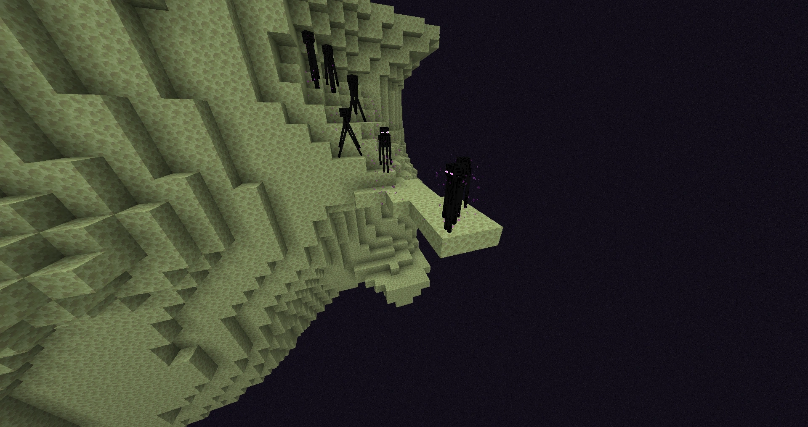
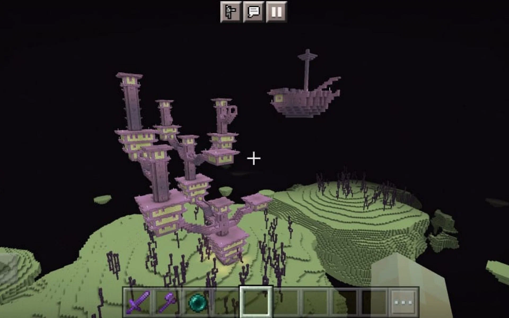
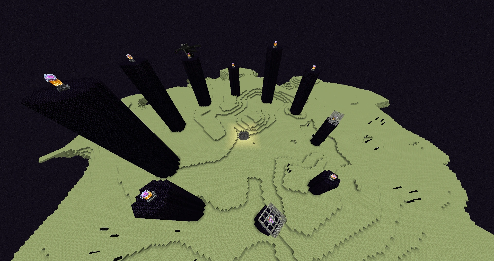

The End is a desolate, otherworldly dimension with vast expanses of void and towering obsidian pillars. Home
to the Endermen and the Ender Dragon, it challenges players with its final-stage atmosphere and offers the ultimate
test of skill as they strive to conquer its perils and claim victory.



End Midlands
Floating islands with various terrain elevations. These islands are relatively flat compared to other End biomes and
often contain End Cities, which are structures filled with valuable loot and Shulkers. The terrain is
covered with End Stone and Chorus Plants, which can be harvested for Chorus Fruit.
End Barrens
Flat and empty region of the End dimension. It is usually found at the edges of End islands and lacks significant
features or structures. The terrain is composed primarily of End Stone, with occasional Chorus Plants. This biome is
considered one of the safer areas in the End due to the lower spawn rates of Endermen.
Small End Islands
Isolated landmasses scattered throughout the void of the End dimension. These islands are much smaller than the
central End island and other biomes, often consisting of just a few blocks of End Stone and Chorus Plants. They
are challenging to navigate due to their size and the surrounding void, making them dangerous for players without
adequate resources.
End Highlands
Elevated terrain and larger End islands. These highlands often feature dramatic cliffs and valleys, providing a
more challenging landscape to traverse. End Cities are more commonly found in this biome, offering valuable loot
and the chance to encounter Shulkers. The terrain is primarily composed of End Stone and Chorus Plants, with
occasional Ender Pearls and other resources scattered throughout.
Dragon Island
The central island where the Ender Dragon resides, surrounded by obsidian pillars. Defeating the Ender Dragon here
is a significant challenge, offering the ultimate reward of an End gateway and the dragon egg.